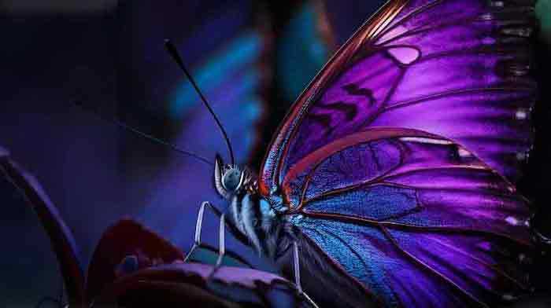
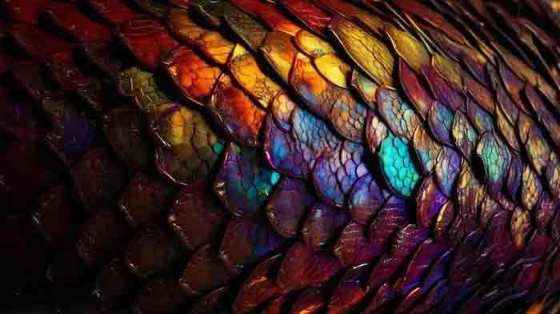

Celebrate the wonder of science from alchemy to AI.
Alchemists were onto something. They did not give us a way to make gold from lead, but they did give us the foundations of modern chemistry. Not too shabby. Crucibles withstood the flames while the elements they contained reacted to form new compounds. Hypotheses were tested. Mysteries were solved. New mysteries were generated. Sure, nuclear chemists can turn base metals into gold. Yet, even today, science has its magic.
This website delves into the four ingredients of the magic of science. Communication. Concepts. Critique. Creativity.
Science
Communication
We are surrounded by the fruits of the labors of scientists and engineers, from AI to genetically engineered food, to sportswear made from new types of fabrics. Headlines warn about the emergence and spread of new diseases. Our politicians hotly debate issues such as the regulation of stem cell research and what to do about global warming. Inquiring minds want to know about the products and processes of science, and scientists are more than happy to talk about their science. The challenge is finding the right ingredients, in the right combination, to make the conversation meaningful for all involved. Learn more
psychology_alt
Sharing the story of science
Concepts
Young minds have an insatiable curiosity about the world. We may not remember our own “why phase” but we were all great wonderers as children. Sometimes science classes do the opposite of what they are intended to do. They make children feel that science is not for them. Science is for everyone, and real science (not textbook science) is very much about wondering and asking questions. The best scientists are the ones who asked the questions that no one else was asking. So go ahead and channel your inner wonderer. Keep asking questions and being curious about this beautiful, mysterious world. Learn more
genetics

The beauty of knowledge.
Critique
Science is central to an increasing number of the decisions we make each day. But while science is prevalent, the science-related information that comes to us is piecemeal and disconnected, often misleading, and sometimes dead wrong. To make matters worse, the textbook science we learn in school leaves us unprepared for grappling with complex contemporary scientific issues. Making science-related decisions in our daily lives requires more than the scientific “facts” we had to memorize and recall on tests. Sound decisions require the careful weighing of the pros and cons of each possible choice. Learn more
psychology

The details of the art of science.
Creativity
Science and art are not polar opposites. Science is a craft. Real science is not about following a textbook recipe of experiments. Real science involves tinkering, trial and error and thinking outside the box. Scientists are among the most creative humans on the planet. You have to be inventive to be an inventor! Science can be exquisitely beautiful, and it is incumbent upon all scientists to communicate that beauty, as well as the triumphs and heartbreaks of the scientific journey to others. The act of communication is also an opportunity for creativity, for example in selecting language, visuals and metaphors. Learn more